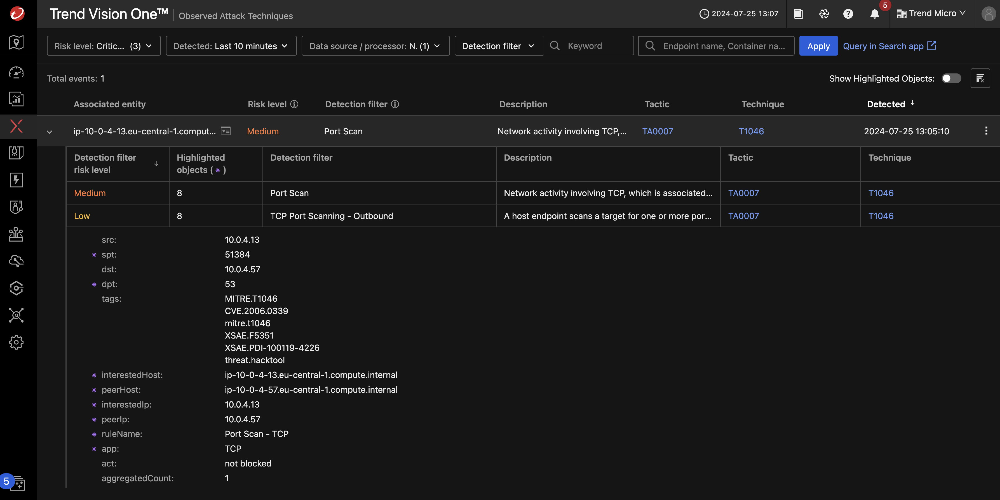

Scenario: Deploying Deep Discovery Inspector on AWS¶
NOT FINISHED YET
Traffic Mirror on AWS¶
In an on-premises environment, you would connect the data port of a Deep Discovery Inspector to a single mirror port to capture all traffic on that switch.
In AWS, you can achieve similar functionality to a switch mirror port by using Traffic Mirroring on Elastic Network Interfaces (ENIs). This feature allows you to capture and inspect network traffic by mirroring it to another interface running monitoring software, such as our Inspector. However, unlike physical switches, in AWS you must explicitly configure traffic mirroring for each ENI you want to monitor.
Prerequisites¶
- Playground One Network
- Activated Marketplace AMI for Trend Deep Discovery Inspector BYOL
- A valid license key for Deep Discovery Inspector
You need to have activated the Trend Deep Discovery Inspector BYOL AMI in Marketplace once. To do this, on the AWS Console choose the service EC2 and navigate to Images --> AMI Catalog. Select the tab AWS Marketplace AMIs and seach for Trend Micro Virtual Network Sensor.
There should only be one AMI shown for your current region. Click on [Select] and [Subscribe on instance launch].
Now, check your Playground One configuration.
Verify, that you have DDI - create Deep Discovery Inspector enabled in your configuration.
Ensure to have the Playground One Network up and running:
You will get some output generated, the DDI relevant section is shown below:
...
Outputs:
...
ddi_ami = "ami-0089a63d4c91694fc"
ddi_va_ip = "3.122.148.231"
ddi_va_pip_dataport = "10.0.4.45"
ddi_va_pip_managementport = "10.0.4.230"
ddi_va_traffic_mirror_filter_id = "tmf-0729a55b05120aedb"
ddi_va_traffic_mirror_target_id = "tmt-032ac48714893a91f"
...
Use ddi_va_id to connect from the Vision One console.
Initial Authentication
The first time you authenticate to the DDI console, you will be asked for an administrator account. Use admin/admin for this.
Test It¶
VERIFY
Connect to the linux_web instance
pgo -o instances
__ __ __ __ __ __ ___
|__) | /\ \ / / _` |__) / \ | | |\ | | \ / \ |\ | |__
| |___ /~~\ | \__> | \ \__/ \__/ | \| |__/ \__/ | \| |___
Using PDO User Access Key ID: ...S7CH
Configuration instances in directory /home/markus/projects/opensource/playground/playground-one/awsone/3-instances
instance_ip_linux_db = "18.194.28.64"
instance_ip_linux_web = "18.185.107.182"
instance_username_linux_server = "ubuntu"
s3_bucket = "pgo-id-bucket-vkdhir40"
ssh_instance_linux_db = "ssh -i /home/markus/projects/opensource/playground/playground-one/pgo-id-key-pair-51f2emm2.pem -o StrictHostKeyChecking=no ubuntu@18.194.28.64"
ssh_instance_linux_web = "ssh -i /home/markus/projects/opensource/playground/playground-one/pgo-id-key-pair-51f2emm2.pem -o StrictHostKeyChecking=no ubuntu@18.185.107.182"
``´
```sh
ssh -i /home/markus/projects/opensource/playground/playground-one/pgo-id-key-pair-51f2emm2.pem -o StrictHostKeyChecking=no ubuntu@18.185.107.182
Now install nmap to trigger a simple detection with our Virtual Network Sensor.
Scan the subnet
Starting Nmap 7.80 ( https://nmap.org ) at 2024-07-25 11:15 UTC
Nmap scan report for ip-10-0-4-13.eu-central-1.compute.internal (10.0.4.13)
Host is up (0.000074s latency).
Not shown: 998 closed ports
PORT STATE SERVICE
22/tcp open ssh
80/tcp open http
Nmap scan report for ip-10-0-4-57.eu-central-1.compute.internal (10.0.4.57)
Host is up (0.00040s latency).
Not shown: 986 filtered ports
PORT STATE SERVICE
20/tcp closed ftp-data
21/tcp closed ftp
22/tcp open ssh
25/tcp closed smtp
53/tcp closed domain
80/tcp closed http
110/tcp closed pop3
113/tcp closed ident
143/tcp closed imap
443/tcp closed https
993/tcp closed imaps
1521/tcp closed oracle
3306/tcp closed mysql
5560/tcp closed isqlplus
Nmap done: 256 IP addresses (2 hosts up) scanned in 7.67 seconds
Starting Nmap 7.80 ( https://nmap.org ) at 2024-07-30 14:52 UTC
Nmap scan report for 10.0.4.91
Host is up (0.00026s latency).
Not shown: 986 filtered ports
PORT STATE SERVICE VERSION
20/tcp closed ftp-data
21/tcp closed ftp
22/tcp open ssh OpenSSH 8.2p1 Ubuntu 4ubuntu0.7 (Ubuntu Linux; protocol 2.0)
25/tcp closed smtp
53/tcp closed domain
80/tcp closed http
110/tcp closed pop3
113/tcp closed ident
143/tcp closed imap
443/tcp closed https
993/tcp closed imaps
1521/tcp closed oracle
3306/tcp closed mysql
5560/tcp closed isqlplus
Service Info: OS: Linux; CPE: cpe:/o:linux:linux_kernel
Nmap scan report for linuxweb (10.0.4.145)
Host is up (0.000093s latency).
Not shown: 998 closed ports
PORT STATE SERVICE VERSION
22/tcp open ssh OpenSSH 8.2p1 Ubuntu 4ubuntu0.7 (Ubuntu Linux; protocol 2.0)
80/tcp open http nginx 1.18.0 (Ubuntu)
|_http-server-header: nginx/1.18.0 (Ubuntu)
|_http-title: Welcome to nginx!
Service Info: OS: Linux; CPE: cpe:/o:linux:linux_kernel
Nmap scan report for 10.0.4.192
Host is up (0.00081s latency).
Not shown: 995 filtered ports
PORT STATE SERVICE VERSION
80/tcp open http Microsoft IIS httpd 10.0
| http-methods:
|_ Potentially risky methods: TRACE
|_http-server-header: Microsoft-IIS/10.0
|_http-title: IIS Windows Server
135/tcp open msrpc Microsoft Windows RPC
139/tcp open netbios-ssn Microsoft Windows netbios-ssn
445/tcp open microsoft-ds?
3389/tcp open ms-wbt-server Microsoft Terminal Services
| rdp-ntlm-info:
| Target_Name: ADFS
| NetBIOS_Domain_Name: ADFS
| NetBIOS_Computer_Name: PGO-CA
| DNS_Domain_Name: pgo-id.local
| DNS_Computer_Name: PGO-CA.pgo-id.local
| Product_Version: 10.0.20348
|_ System_Time: 2024-07-30T14:53:04+00:00
| ssl-cert: Subject: commonName=PGO-CA.pgo-id.local
| Not valid before: 2024-07-29T11:08:41
|_Not valid after: 2025-01-28T11:08:41
|_ssl-date: 2024-07-30T14:53:44+00:00; 0s from scanner time.
Service Info: OS: Windows; CPE: cpe:/o:microsoft:windows
Host script results:
|_nbstat: NetBIOS name: PGO-CA, NetBIOS user: <unknown>, NetBIOS MAC: 02:5b:ce:db:4e:69 (unknown)
| smb2-security-mode:
| 2.02:
|_ Message signing enabled but not required
| smb2-time:
| date: 2024-07-30T14:53:04
|_ start_date: N/A
Service detection performed. Please report any incorrect results at https://nmap.org/submit/ .
Nmap done: 512 IP addresses (3 hosts up) scanned in 64.22 seconds
Head over to XDR Threat Investigation -> Observed Attack Techniques.
Set the Risk Level to include Medium and Datasource to Network -> Network Sensor. The following detection should pop up:
